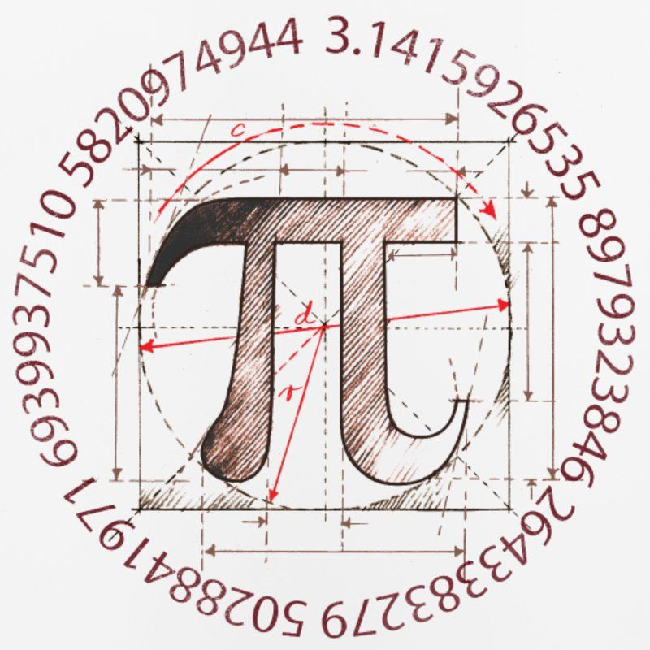
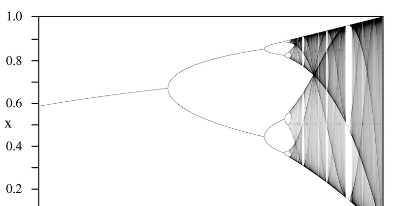
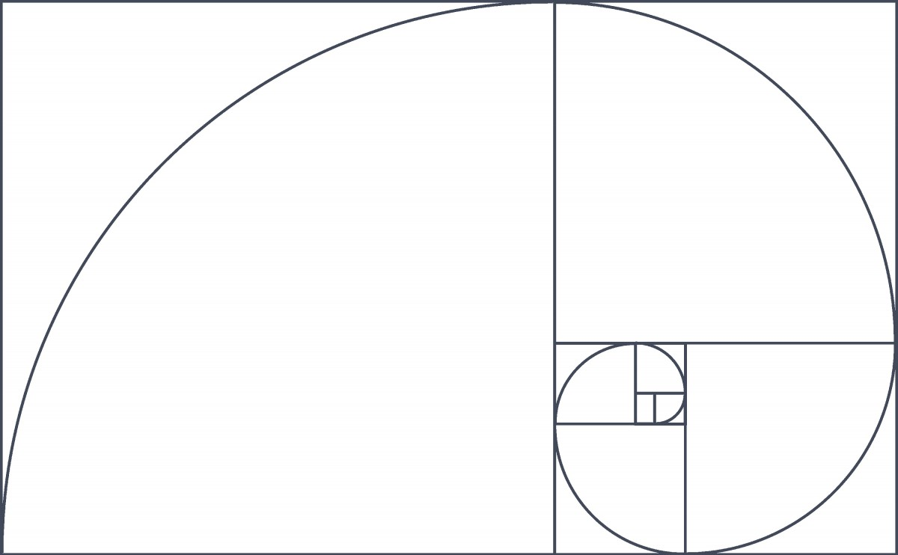
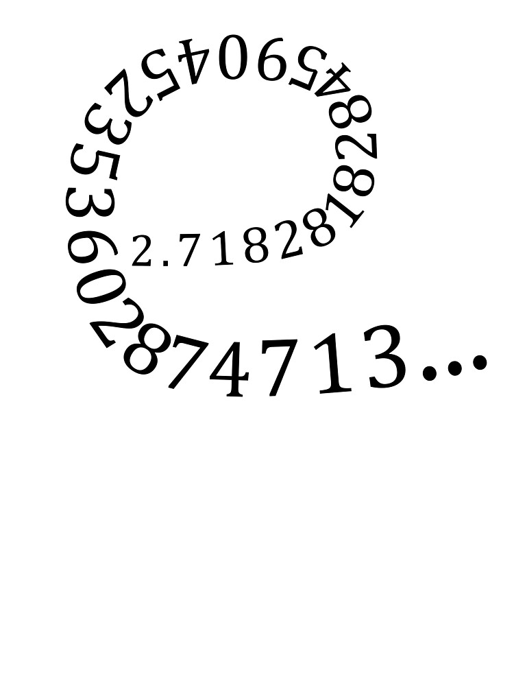

Famous Mathematical Constants
Famous Mathematical Constants
This website will describe 4 famous mathematical constants. Each section will describe who first discovered the constant, what each one represents, and some real world applications of the number.



